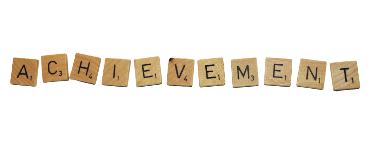

Below is my achievement that I received throughout my High-school until University:
Achievement
Year
Staff Sarjan Peringkat Daerah (2015)
Pegawai Waran I Peringkat Negeri (2016)
Pegawai Waran I Terbaik Peringkat Kebangsaan (2017)
Pelajar Terbaik Tingkatan 4 (Kelas Ehsan) (2016)
Anugerah Pelajar Terbaik Aliran Sains Kemanusiaan (2017)
Anugerah Pelajar Terbaik SPM (2017)
Anugerah Pelajar Terbaik STPM (2019)
Copyright by Nurmiezwani Binti Mohd Rozi © 2021